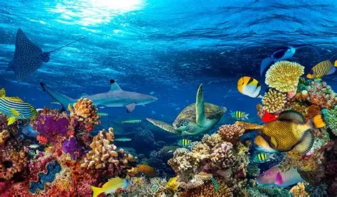

Características Principales
Las principales características de los ecosistemas acuáticos son las siguientes:
- Pueden ser de agua dulce o salada, pues abarcan tanto ríos y lagos como océanos y mares.
- La luz, la salinidad y la profundidad son los principales factores que influyen en la biodiversidad y las características de estos ecosistemas.
- Se vinculan con los ecosistemas terrestres en zonas como los estuarios, donde se mezclan el agua dulce y el agua salada.
- Albergan organismos flotadores (plancton), nadadores (necton) y habitantes del fondo (bentos).
- Presentan la mayor biodiversidad del planeta, con miles de especies de peces, aves y plantas.